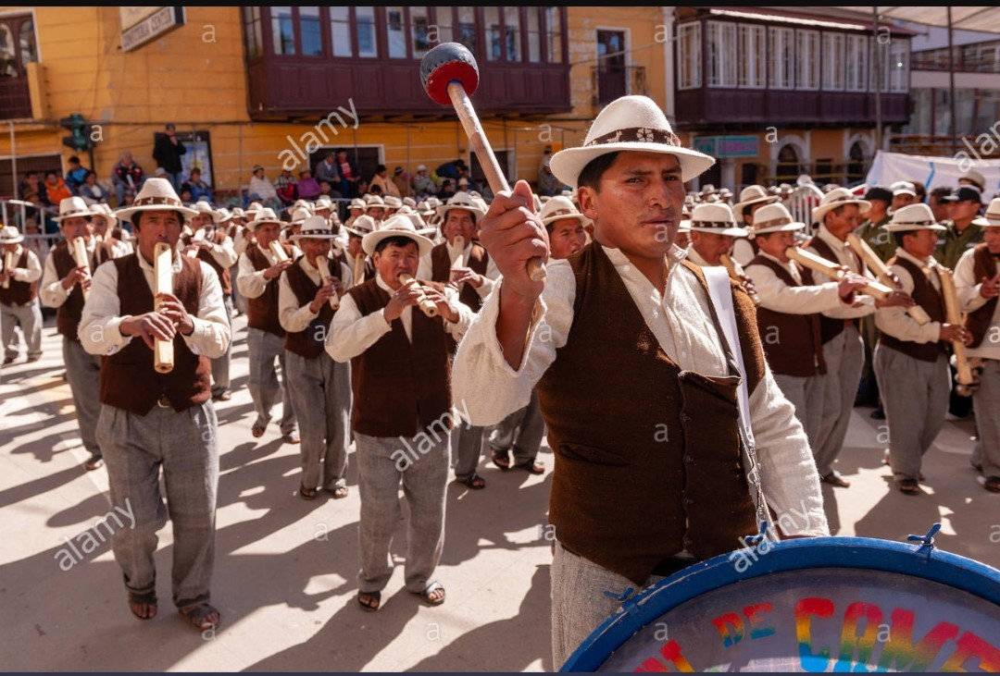

La cultura aymara es un de las cultura mas antiguas de la region de los andes que en dia a vitan el depatemento de Oruro y La paz, los mayoires rasgos de estas cultura son:
VESTIMENTA
la vestimenta de las aymara esta hecho mayormente de la lana de alpaca y la de llama. Con la lana de alcapay llama pueden hacer:Chompas, Pantalones, Chalecos, Q´urawas, Chacos, ponchos y otros mas.

RITMOS MUSICALES
en este punton la musica que tocan los aymaras denominado tarqueada, en esta cultura solo se toca en en momentos necesarios del año como ser:en epocas de lluvia, tambian para la coronacion de los las nuevas auto ridedas originarias
